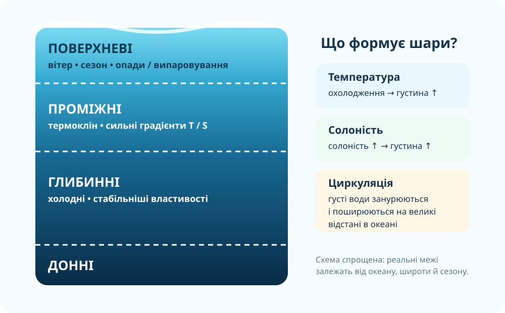

1. Практична мета і продукт
Схема класифікації водних мас за глибиною з доказами: температура, солоність, густина, походження.
Паспорт азонального природного комплексу своєї місцевості за реальною картою.
Аргументований висновок: який чинник сильніший за широтну зональність у вибраному об’єкті.
2. Реальні океанічні дані: спочатку дивимося, потім пояснюємо
Argo — профілі океану
Мережа роботизованих буїв вимірює температуру, солоність і тиск під час підйому крізь товщу океану. Більшість буїв працює до 2000 м, Deep Argo — до 6000 м.
Відкрити Argo Data →Copernicus Marine
У MyOcean Viewer можна порівнювати температуру, солоність, течії та інші змінні. Для цієї роботи достатньо температури й солоності.
Відкрити Copernicus Viewer →Argo збирає глобальні профілі температури/солоності; Copernicus Marine публікує спостережені й модельовані поля океанічних змінних. Для практичної роботи не потрібно завантажувати NetCDF — достатньо перегляду профілю/карти.
3. Інтерактивний тренажер профілю: де Ви в товщі океану?
Це навчальна модель типового профілю, а не вимірювання конкретної точки. Порівняйте її з реальними Argo/Copernicus даними.
поверхня≈200 м≈1000 м≈4000 м6000 м
дно
Температура: ≈ 8–16 °C
часто 34–36‰, але залежить від регіону
Швидка зміна температури з глибиною.
4. Практична робота А: створіть схему класифікації водних мас за глибиною
Натисніть картки у порядку від поверхні до дна.
| Тип | Орієнтовне положення | Що фіксуємо в даних | Механізм |
|---|---|---|---|
| Поверхневі | верхній перемішаний шар | сильний вплив сезону, вітру, опадів/випаровування | нагрівання Сонцем, перемішування |
| Проміжні | нижче поверхневого шару | часто різкий градієнт T; у різних океанах різна S | занурення й поширення вод, термо-/галоклін |
| Глибинні | переважно великі глибини | низька T, відносно стабільні властивості | щільні води поширюються на великі відстані |
| Донні | біля океанічного дна | дуже холодні, густі | формування у високих широтах і занурення |
5. Чому холодна солона вода може опускатися?

Густина морської води загалом зростає, коли вода охолоджується та/або стає солонішою. Саме тому холодні солоні води високих широт можуть занурюватися й живити глибинну циркуляцію.
NOAA: Why does the ocean get colder at depth? →6. Коротке відео: як Argo «бачить» океан під поверхнею
CSIRO: Explaining Argo floats. Під час перегляду випишіть два параметри, які вимірює буй, і максимальну глибину звичайного профілю.
7. Практична робота Б: знайдіть азональний природний комплекс
Азональний означає, що його формування визначається не лише широтною зміною тепла й вологи, а сильним місцевим чинником: річкою, рельєфом, породами, ґрунтовими водами, узбережжям тощо.
OpenStreetMap: приклад для Запорізького регіону. Якщо Ваша місцевість інша — відкрийте OSM окремо й знайдіть свою адресу/населений пункт.
Відкрити OSM і знайти свою місцевість →8. Паспорт природного комплексу своєї місцевості
9. CER — доведіть, а не просто назвіть
Твердження: «Річкова заплава або балка може утворювати азональний природний комплекс усередині однієї природної зони».
10. Теорія після практики: що потрібно забрати з уроку
Водні маси
Це великі об’єми океанічної води з відносно характерними температурою, солоністю, густиною та історією формування. За положенням у товщі океану в шкільній схемі виділяємо поверхневі, проміжні, глибинні й донні.
Термоклін — шар швидкої зміни температури між теплішим верхнім перемішаним шаром і холоднішими глибшими водами. Його глибина та вираженість залежать від широти й сезону.
Азональні комплекси
Їхні межі й властивості визначає місцевий чинник, тому вони можуть перетинати широтні природні зони. Типові приклади: річкові долини й заплави, узбережжя, болота, балки, гірські комплекси, ділянки на особливих породах.
Головне: зональність і азональність не заперечують одна одну — вони накладаються.
11. Домашня робота
§17. Завершіть паспорт свого азонального природного комплексу: додайте скриншот/замальовку карти, 2–3 картографічні докази та висновок на 4–6 речень. Якщо маєте змогу безпечно спостерігати об’єкт наживо — додайте одну власну ознаку, якої не видно на карті.